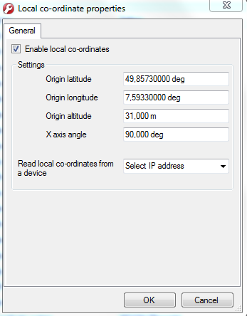

Fr 27.10.2017 15:07
Einstellung für Wolfsburg
52.435315, 10.797710

Fr 14.07.2017 16:55
1) NAVconfig starten
RT4000->v1
Das Gerät hat die IP 192.168.16.25 [RT4003G]
Mo 07.08.2017 15:17
neue Koordinaten für Laatzen ADAC Presentation eingegeben

Fr 14.07.2017 16:55
mneue Einstellung Local Coordinates Ffm

alte Einstellung ContiDrom

aktuelle Konfiguration habe ich in D:\RTAS_tools\vpu2_lat_ft\RTconfig\PassatLi_Ffm_170714_neuConfig_mit_Ffm_Koordinaten gespeichert